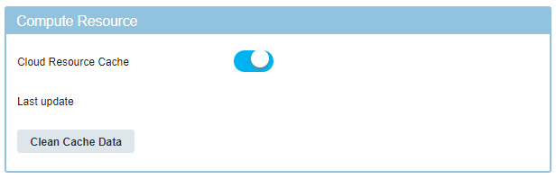

Caching artifacts on the cloud discovery service
You can cache information about flavors, regions, and images on the cloud discovery service to speed up communication between the blueprint design server and clouds. By default, the blueprint designer does not use this cached information, but you can enable it.
The caching service stores cloud resources the first time you connect to a cloud provider or test the connection to a cloud provider. It does not store cloud resources preemptively. The caching settings are in the /usr/lib/python2.7/site-packages/clouddiscoveryservice/default_settings.py file.
Caching is enabled by default on the cloud discovery service, but by default, the blueprint designer does not use the cached information. To use the cached information, you must configure settings in the cloud discovery service and enable the cache in the blueprint designer system settings.
- Open the default_settings.py file in a text editor.
- To disable caching, set the LIVEDATA property to
True. Now the blueprint design server always retrieves the latest data from the target cloud. - To enable caching, set the LIVEDATA property to
False(the default). - In the CLOUD_CACHE_SETTINGS section, in the cache_life field, specify how often to clear the entire cache, in hours. This setting specifies when to clear the caches for all cloud providers. This setting overrides the individual settings for each cloud provider.
- In the frequency field, specify how often to clear the caches for individual cloud providers, in hours. You can override this default for each cloud provider.
- In the settings for each cloud provider, in the frequency field, specify how often to clear the caches for that cloud provider.
-
In the settings for each cloud provider, specify which resources to cache. For example, the following settings for AWS clear the cache every 5 hours and cache several different types of resources:
CLOUD_CACHE_SETTINGS = ''' { "default":{ "frequency":10, "cache_life":168 }, "amazon": { "resources": [ "images", "networks", "regions", "volumes", "asg_resources", "cache_clusters", "database_instances", "keypairs", "locations", "security_groups", "replication_groups" ], "frequency":"5" },By default, the default_settings.py file lists all of the resource types that can be cached. You can remove resources that you do not want to cache.
-
Save the file and restart the cloud discovery service. See Stopping the blueprint designer, cloud discovery service, and engine and Starting the blueprint designer, cloud discovery service, and engine.
-
In the blueprint designer, open the system settings and enable the Cloud Resource Cache setting, as shown in the following figure:

Now when you access a cloud provider for the first time, the cloud discovery service caches the resources from that cloud, based on the settings file. The cloud delivery service also cleans the cache based on the schedule in the default_settings.py file. You can also manually clear the cache by clicking Clean Cache Data.
Parent topic: Blueprint design server configuration